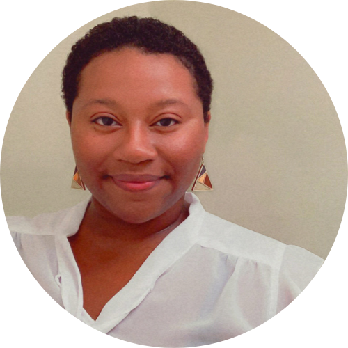

|  |
Toi ParkerSoftware EngineerAnalytical | Action-Oriented | Creative Enthusiastic and motivated Junior Developer with nine years of experience in strategic problem solving, business management, and campaign creation with the purpose of helping businesses reach financial and social improvement goals. Ability to apply theoretical concepts in the practical world. Excellent communication skills and adaptable to demands of changing work environments. Contact Information |
Louisiana State University - Baton Rouge, LA
Bachelor of Interdisciplinary Studies – Business Administration, Communication, Digital Marketing, March 2022
| March 2022-present | Software Developer Consultant - Genesis10 - Kent, WA |
Implemented program logic, documentation, and procedural changes on schedule and according to an established implementation plan.
| Sept 2013-present | Freelance Photographer - Lyn Parker Photography - Kent, WA |
Responsible for generating and managing 500+ clients' experience from initial inquiry to product delivery while ensuring quality service
| Database Integrations | Unit Testing | Node.js | React | C# | .NET Framework | JavaScript | HTML | SQL |
There are many reasons I decided to change careers and become a software developer; opportunity, potential earnings, and flexibility to name a few. However, the two most important reasons are creation and impact. I love being able to take an idea and bring it to life and development is the prefect field to help companies and brands turn their ideas into fully functioning websites and applications. Secondly, is impact. There is nothing more fulfilling, in my career, than helping others accomplish their goals. As a developer, I have the skill set to help a multiple million dollar company develop a program that can completely change the world or help a single mother take a shot at following her entrepreneurial dreams and that is important for me. My career is about more than a paycheck, it’s about doing something that aligns with my natural skill set, pushes me to learn and grow continuously, allows me to be creative and think outside the box, all while making a difference, and software development checks all those boxes.